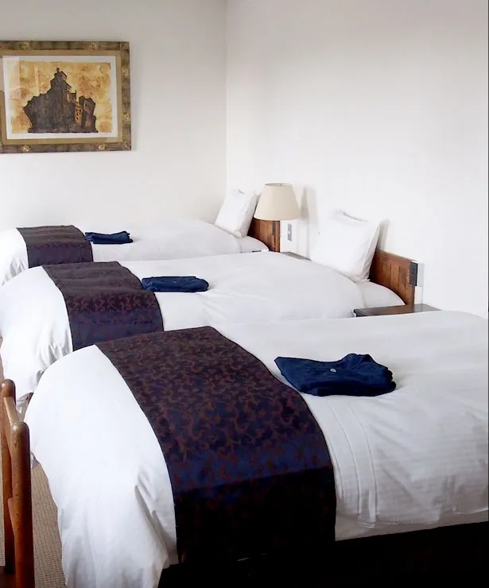

応募する
お電話でも受け付けています0138-30-3030

LC五稜郭ホテルで、一緒に働く人を探しています。

夕方、灯りが
ともるころ。

客室は119室本館と別館。観光や出張のお客さまが毎日やってきます。

市電から歩いて3分「五稜郭公園前」の電停から。車通勤もOK。
Message
喫茶店、パン屋、居酒屋、スーパー、保育士。ここで働く人の前の仕事は、ばらばらです。それでも、お客さまの顔を見て声をかけること、忙しいときに段取りよく動くこと。前の仕事で身につけたことが、そのまま活きる場所です。
朝の5時から、夜の見回りまで。それぞれの時間に入る人が、ノートで次の人へバトンを渡しながら、このホテルの1日をつくっています。
LC五稜郭ホテル スタッフ一同
仕事のあとに、ひと息。| 雇用形態 | アルバイト・パート |
|---|---|
| 日数 | 週2日から。扶養の範囲内OK |
| 勤務地 | LC五稜郭ホテル函館市本町29-26／市電「五稜郭公園前」徒歩3分／転勤なし |
| 待遇 | 交通費全額／車通勤OK／制服貸与／社員割引／サウナ無料／正社員登用あり |
| 試用期間 | 6か月（条件は同じ） |
| 受動喫煙 | 屋内禁煙（喫煙所あり） |
| 会社 | 株式会社リンクル（LCグループ） |
大丈夫です。最初に研修があり、接客の基本から教えます。
できます。Wワーク・副業の人も働いています。
どうぞ。下のフォームで「見学したい」を選んでください。
お電話でも受け付けています0138-30-3030